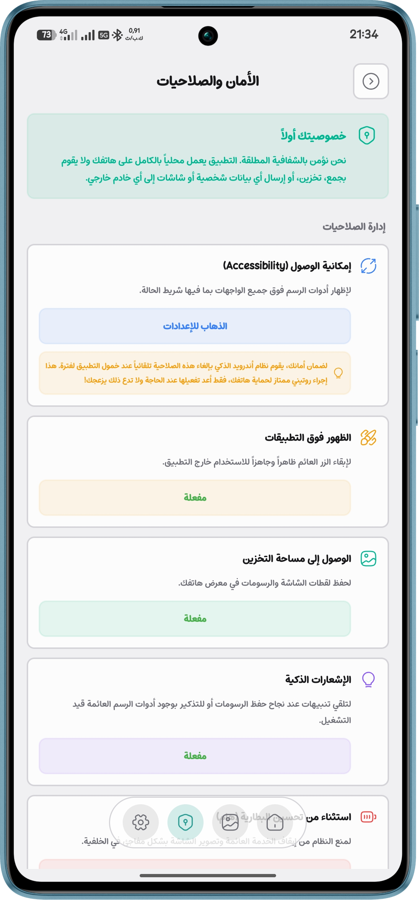
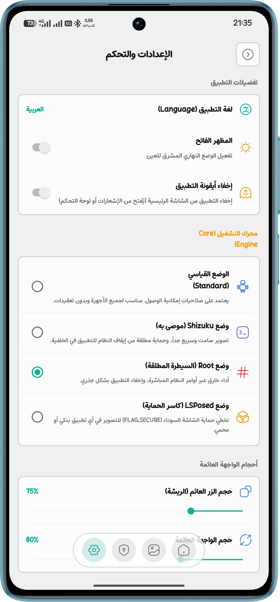

منصة التحكم وإعدادات الشرح الاحترافية
تطبيق بسيط وفعال للرسم على الشاشة والتقاطها بأمان وبوضع عدم الاتصال بالكامل (Offline). يوفر التطبيق مرونة كاملة في التشغيل ليناسب مختلف الأجهزة، حيث يدعم الوضع القياسي السهل، بالإضافة إلى محركات Shizuku و Root و LSPosed لضمان أداء مستقر وثابت.




أدوات التوضيح المتقدمة (PRO)
مجموعة كاملة من الأدوات المصممة بعناية فائقة لتقديم شروحات تفاعلية، تسجيلات شاشة احترافية، وحماية للبيانات.
مؤشر الليزر التفاعلي
مؤشر ليزر ذكي بنمط المذنب؛ يتبع الذيل المضيء مسار إصبعك ويختفي فوراً لتوجيه انتباه المشاهدين بشكل دقيق أثناء الشرح.
تعتيم الشطرنج (Censor)
قم بحماية البيانات الحساسة بسهولة من خلال أداة التعتيم الفورية. استخدم المربع أو الدائرة لتظليل النصوص أو الوجوه قبل التقاط الشاشة.
حفظ عالي الجودة (PNG)
التقط أعمالك وشروحاتك بدقة عالية الجودة بصيغة PNG أو وفر المساحة باستخدام JPEG. جميع اللقطات تُحفظ مباشرة في المعرض المدمج.
محركات التشغيل الأربعة (Core Engines)
أداء لا ينقطع. يقدم دراويكس برو أوضاع تشغيل متقدمة لضمان بقاء أدوات الرسم العائمة ثابتة وقوية على أي جهاز أندرويد مهما كانت القيود.
الوضع القياسي (Standard)
الوضع الافتراضي الذي يعتمد على صلاحيات إمكانية الوصول (Accessibility). سهل الإعداد ومناسب لمعظم الأجهزة الذكية وبدون أي تعقيدات تقنية.
وضع Shizuku (موصى به)
يستخدم بروتوكولات متطورة لتصوير الشاشة بشكل صامت وسريع جداً، مع توفير حماية مطلقة من إيقاف النظام العشوائي للتطبيق في الخلفية.
وضع Root (السيطرة المطلقة)
مصمم للمحترفين. يمنح أداءً خارقاً عبر أوامر النظام المباشرة، متجاوزاً كافة قيود الذاكرة العشوائية لضمان التقاط فوري وثبات عميق في النظام.
وضع LSPosed (كاسر الحماية)
هل تواجه شاشة سوداء عند التصوير؟ يعمل وضع LSPosed على تخطي حماية الشاشة (FLAG_SECURE) لتمكينك من التصوير والشرح في أي تطبيق محمي أو بنكي.